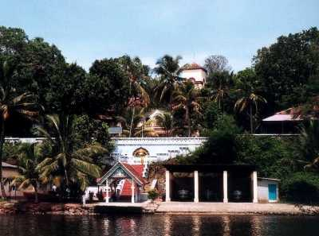
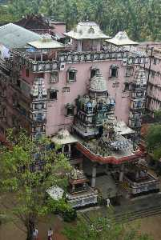

KOLLAM
Kollam is a city in the state of Kerala, on India's Malabar Coast. It’s known as a trade hub and for its beaches, like lively Kollam and secluded Thirumullavaram. Sardar Vallabhbhai Patel Police Museum has artifacts tracing the history of the police force. Nearby, Ashtamudi Lake is a gateway to the Kerala backwaters, a network of waterways rich with vegetation. The striped 1902 Tangasseri Lighthouse has ocean views

Thevally Palace

A place of great historic importance, Thevally Palace is situated on the banks of Ashtamude Lake. Once served as the home of Maharaja of Travancore, it was constructed under the rule of Gauri Parvathi Bai between 1800 and 1819. The striking feature about the palace is that it presents an intriguing fusion of Dutch, English and Portuguese style of architecture.
Readmore
Amritapuri

Ashram of Amritapuri has been constructed at the same place where Sri Mata Amritanandamayi Devi was born. People from all over the world, flock in to seek the blessings of Amma. The people residing in the ashram and all the disciplines of Amma have given up their life in the salvation of God and making the world a better place to live in. Amma makes sure to listen to each and every child who comes to her 'darshan' and solve each of their problems with an effective solution.
Looking at Amritapuri, one can relive the ancient saying of 'the entire world is one family'. It is a collection of people from different cultures, speaking different languages and following different religions. Diverse people from different environments live together under a single roof in search of a meaningful life.
Amritapuri Ashram is a small village remotely located on a small island which is surrounded by the backwaters and the Arabian Sea. It has now become a famous location for people seeking spirituality and inner peace. The Ashram is home to the international disciplines as well, almost 3000 of them.
Readmore
Jatayu Earth's Centre

Jatayu Nature Park is a rock-themed park which got opened on November 25, 2017. Built to promote mythology and adventure tourism, the tourism centre boasts of 6D theatre, a digital audio-visual room, cable car and ayurvedic cave resort. It is also home to umpteen adventure activities including paintball, laser tag, archery, bouldering, rock climbing, air-rifle shooting etc. The primary attraction of the park, however, is the world's largest stone-cut bird sculpture replicating Jatayu, the mythical bird from Ramayana.
Readmore